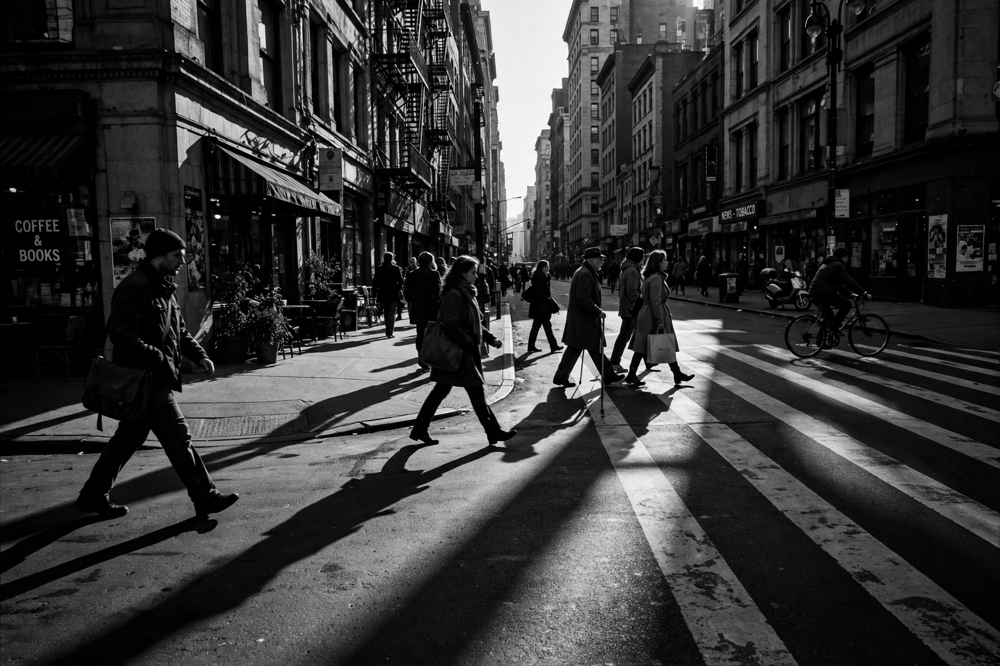

From Wikipedia, the free encyclopedia
| Black-and-white | |
|---|---|
 A black-and-white photograph | |
| Also called | Monochrome, B&W, greyscale |
| Media | Photography, film, printing, television |
Black-and-white (often abbreviated B&W) describes a visual medium in which images are rendered in shades of a single neutral colour — black, white, and intermediate greys — rather than in full colour. The term covers early photography and cinematography, monochrome printing, and deliberate artistic use of greyscale in the colour era.
All of the earliest photographic processes, from the daguerreotype (1839) onward, were monochrome. Cinema was likewise born in black-and-white; although colour processes such as Technicolor existed from the 1930s, black-and-white remained the industry standard until the 1960s, when colour film and television became economically dominant. Newspapers and books continued to print largely in black-and-white well into the late twentieth century because of cost.
Photographers and filmmakers continue to choose black-and-white for its emphasis on composition, texture, contrast, and tonal range, and for its associations with documentary realism and historical periods. Notable modern examples include the films Schindler's List (1993, largely monochrome), The Artist (2011), and Roma (2018). In digital photography, monochrome images are often produced by desaturating colour captures or by dedicated monochrome-sensor cameras.
A black-and-white image encodes luminance only. In film photography, silver-halide emulsions record light intensity across the visible spectrum; printing onto photographic paper produces the final tonal scale. In printing, halftone screens simulate greys with dot patterns. In digital terms, a greyscale image typically stores one brightness channel per pixel, in contrast to the three channels (red, green, blue) of colour images.